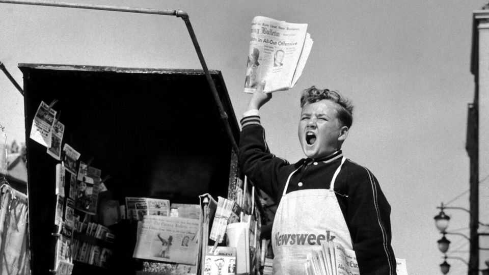

What the dead can teach you about life
Hurry up: both to make your mark and to cherish your loved ones

Aug 27th 2026
Alfred Nobel, the inventor of dynamite, did not die in 1888. But his brother, Ludvig, an engineer, did. In a mix-up, a French newspaper published an obituary of the wrong Nobel, calling Alfred a “merchant of death”. Chastened and fearing for his reputation, he endowed the prizes awarded in his name.
This is one of many droll anecdotes in “Are They Dead Yet?”, a memoir and meditation on obituaries by Sam Roberts, a veteran writer of them at the New York Times. Nobel’s tale quirkily captures the deep purpose of reading about the deceased. At bottom, obituaries are less records of the end of another person’s life than lessons in how to live your own.
The illustrious dead are intimidating. As Mr Roberts says, it is dispiriting to compare their exploits with your own piffling achievements. Especially if you are over 37: that is the average age at which, one analysis shows, people manage the feat that earns their obituary. Why them, you wonder, and not you? Then again, the dead might ask the same question of the living if they could. Mr Roberts quotes David Hirshey, an American writer: “No matter how accomplished you were, if I’m reading your obit, I’m doing better than you are.”
Besides supplying a shiver of relief, the venerated dead teach you how to earn society’s esteem. The entrance criteria for the obituarised elite vary over time. The deaths of athletes and entertainers, for instance, were more noteworthy in the late 20th century than at the start. In the past women and minorities were unfairly overlooked (not only because they were unlikely to hold positions of power). “To be valued,” writes Mr Roberts, “one first has to be noticed.”
If the dead reveal how posterity measures achievements, they also suggest how to balance personal merits against mistakes. It is a consolation to learn that many great careers included failings and lapses. “When does an error define the arc of a life,” Mr Roberts inquires, “and when does a person defy it?” He cites Irving Kaufman, a judge who in 1951 sentenced the Rosenbergs to death for espionage, but was also a free-speech champion. Sometimes it is hard to adjudicate between virtues and flaws. “Say what you like about Boris Yeltsin”, began one obituary of the sozzled Russian leader, “and you’re probably right.”
In general, death is the least interesting thing about the dead. “Death is not an event of life,” argued Ludwig Wittgenstein, and, mournful as the form seems, it is scarcely a feature of obituaries either. Typically, writes Mr Roberts, they “mention the word died only once”. They are much less funereal than much of the news, which routinely focuses on murder, war, natural disasters and other lethal woes.
“Obits are about lives, not deaths,” Mr Roberts summarises. And lives are not like tight basketball games, the upshot determined at the finale. The ending does not outweigh what went before; last words rarely express a person’s essence. The author is sceptical of supposed deathbed aphorisms. Did Groucho Marx really quip, “Die, my dear? Why, that’s the last thing I’d do!” A baffled plea ascribed to Pancho Villa, a Mexican revolutionary, is more plausible: “Don’t let it end like this, tell them I said something.”
The sense that a life’s closing scenes are just one detail in a longer story, crystallised in obituaries, is sometimes felt keenly by the bereaved. Distant, half-forgotten memories of a loved one flood back, seeming as real as their recent illness and decrepitude. And they are as real: the elderly father who dribbled in a care home is no truer a version of him than the vigorous figure who carried you on his shoulders. Newspapers often run pictures of wizened octogenarians with their obituaries, but choosing earlier ones is fine. The dead are no more 80 than they are 18.
A final lesson of obituaries concerns sequencing. Hardly any of their subjects get to read them—though Mr Roberts recounts cases in which wise guys tried to vet tributes prepared in advance of their demise, or even to write them themselves. Approaching his last bow in 1891, P.T. Barnum, an American showman, yearned to see his obituary. The New York Evening Sun obliged: “GREAT AND ONLY BARNUM. HE WANTED TO READ HIS OBITUARY; HERE IT IS.”
This logical hitch is a disappointment of eulogies, too: the dead don’t get to hear how adored and revered they were. It may be too late to emulate the glorious deeds immortalised in obituaries, but, happily, this is a problem you can help fix. Tally up the people you love and admire—and tell them so now. ■